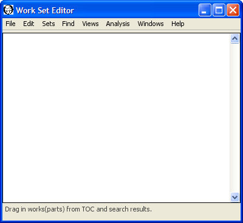

|
|
|
To create, edit, or delete work sets you must first login so that the Sets menu becomes available. Not all installations of WordHoard allow you to login. You will not be able to create work sets on such systems.
WordHoard provides four different methods for creating a work set from the Sets menu:
Select "Sets, Work, New Work Set" from the menu to choose one of these creation methods.
You may edit or delete work sets as well as see a description of the data associated with a work set.
To create a work set by manually selecting the works or work parts of interest, select "Sets, Work, New Work Set, Using Work Part Selection" from the menu. The following new work set dialog appears.
As an example, let's create a work set that contains all the tragedies of Shakespeare except for Hamlet. We fill in the dialog fields as follows.
You must enter a title for the work set. The title is a required field. Each of your work sets must have a distinct title. Someone else may use the same title for a work set. The different account name will distinguish the otherwise identically named work sets. We'll use "Shakespeare Tragedies Except Hamlet" as the title for our work set.
You may enter an optional description of the work set.
You may enter an optional web page URL where more information about the work set may be found. It is up to you to create that web page.
A work set may be public or private. A public work set may be viewed and used by any WordHoard user. A private work set may be viewed and used only by the creator, and only when the creator is logged in. Work sets are private by default. Select the check box before Public to make the work set public.
Select the work parts for the work set from the tree of texts. If you select a corpus or work set, all the works contained in that corpus or work set will appear in the work set. You may also select individual works or work parts. Selecting a work includes all its constituent work parts. You may unselect a check box to remove one or more work parts. A work set does not remember the source of an entry. For example, you may include "Hamlet" in the work set by choosing that work directly, or by including all the works of Shakespeare using the "Shakespeare" corpus, or by choosing the "Shakespeare Tragedies" work set. Both of the latter will include other works besides Hamlet of course.
Using existing work sets as the source for the new work set contents provides a convenient way to merge work sets. For example, if you want a work set containing the romances and comedies of Shakespeare, you can select the existing "Shakespeare Romances" and "Shakespeare Comedies" as the sources for a new work set which will contain all the romances and comedies.
For our sample work set, we individually select each of the tragedies of Shakespeare except for Hamlet. The Table of Contents window conveniently lists the tragedies of Shakespeare together if we select the Shakespeare pane along with "By Genre" button.
Press the "Create" button to create the work set. WordHoard tells you the work set creation succeeded or reports any errors if the work set creation failed.
You may also create a work set from the work parts contained in a corpus, work set, or word set. This allows you to "clone" a work set and then edit the contents. To create our tragedies minus Hamlet work set, choose "Sets, Work, New Work Set, Using Work Parts in Text" from the menu to bring up a dialog which allows you to create a new work from the works and work parts in an existing work set. Set the title as you prefer and specify the existing work set "Shakespeare Tragedies" as the source of the work parts. Here we call the new work set "Shakespeare Tragedies Except Hamlet." Press the "Create" button to create the work set, which will contains the exact same works and work parts as the "Shakespeare Tragedies" work set.

The work set we just created contains all of the Shakespeare tragedies. To remove Hamlet from the work set, choose "Sets, Work, Edit Work Set" and select the work set we just created from the list of editable work sets at the top of the dialog. Now we can edit the work set we just selected by modifying the remaining dialog entries. The bottom dialog entry lists the works and work parts contained in the work set. You will see that all the tragedies of Shakespeare are checked. Scroll down and uncheck "Hamlet" to remove it from the work set. Press the "update" button to save the modified work set. Our work set now contains all the Shakespeare tragedies except for Hamlet.
You can create a work set using a saved bibliographic query. Select "Sets, Work, New Work Set, Using A Query" from the menu. The following new work set dialog appears.
The title, description, web page URL, and Public fields are the same as the other work set creation dialogs. The last field, Queries, lists the available saved bibliographic queries we can select to create the work set. Here we create a work set containing all works whose earliest possible publication date is 1600 and whose latest possible publication date is 1610.
Press the "Create" button to create the work set. WordHoard tells you the work set creation succeeded or reports any errors if the work set creation failed.
You can create work sets by dragging works or work parts into the Work Set Editor window from the Table of Contents window or from search result windows. To create a work set using the Work Set Editor, select "Sets, Work, New Work Set, Using Work Set Window." The Work Set Editor window is initially empty. When you drag only part of a work into the Work Set Editor, that work part's ancestors appear in light gray. You can delete works or work parts from the window by selecting them and then pressing the delete or backspace key.

Let's create our "Shakespeare Tragedies Except Hamlet" work set using the Work Set Editor window. Make sure the Table of Contents window is visible. Select the Shakespeare tab, and then select the "By Genre" option. The Shakespearean Tragedies are grouped together under "Tragedies." Highlight "Tragedies" by clicking on it. Then drag the highlighted "Tragedies" to the Work Set Editor window. When you release the mouse, the ten Shakepearean tragedies will appear in the Work Set Editor.
Click on "Hamlet" in the Work Set Editor window to select it, as in the sample dialog above. Press the delete key to remove Hamlet from the list of works. Now the Editor window contains only the nine remaining Shakespearean tragedies.

You may save this work set using the "Save Work Set" menu item in the File menu.
You can edit work sets you create in two ways. The first is to select "Sets, Work, Edit Work Set" from the menu. The edit work set dialog appears.
The top panel of the dialog lists the work sets which you are allowed to edit. You can only edit public or private work sets which you have created. You cannot edit work sets belonging to others. Select the work set you wish to edit. The remaining fields in the dialog change to reflect the current values in the selected work set. For example, select our "Shakespeare Tragedies Except Hamlet" work set. The title, description, web page, public flag, and checked list of work parts for that work set now appear in the dialog.
You may change the title, description, web page URL, and public flag by entering new values. You may change the work parts included in the work set by selecting or unselecting the check boxes next to work parts in the bottom panel in the dialog. Press the "Update" button to save any changes you make.
The second way to edit a work set is using the Work Set Editor window. Select "File, Open Work Set" from the menu. Choose the work set you wish to edit from the list. The list contains all public and your private work sets. You can select a work set that does not belong to you. You will not be able to replace someone else's work set, but you can use it as a starting point for creating your own.
For example, we can create our "Shakespeare Tragedies Except Hamlet" work set by selecting the "Shakespeare Tragedies" work set from the list. This displays the same Work Set Editor window listing the contents of the "Shakespeare Tragedies" work set as we saw above when using the Work Set Editor to create the "Shakespeare Tragedies Except Hamlet" work set from scratch. Click on "Hamlet" in the Work Set Editor window, press the backspace or delete key to remove Hamlet, and select "File, Save Work Set" from the menu to save your newly created/edited work set.
You may delete one or more of the work sets you have created by selecting "Sets, Work, Delete Work Set" from the menu. The Delete Work Sets dialog appears with the names of your work sets. If you have not created any work sets, WordHoard displays a message to that effect instead.
Select the check box next to each work set you want to delete so that a check mark appears in the box. In the sample dialog above we select "Shakespeare Tragedies Except Hamlet" for deletion by toggling the check box next to it. Press the Delete button to delete the selected work sets.
Please be careful. Once you delete a work set, it cannot be recovered. You will need to recreate the work set if you want to use it again.
You may see a brief summary of the data associated with a work set by selecting "Sets, Work, Describe Work Set" from the menu.
Select the work set whose description you want and press the Describe button. Let's select our "Shakespeare Tragedies Except Hamlet" work set.
In addition to the fields entered when the work set was created, the description includes the creation and last modification time, the account name for the work set's owner, and the total number of works and work parts contained in the work set.
|
|
|